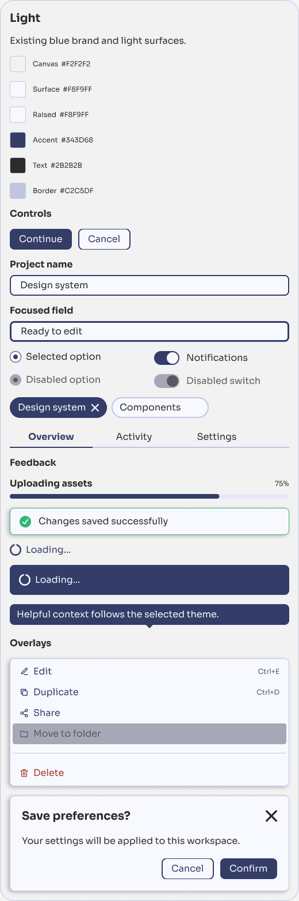
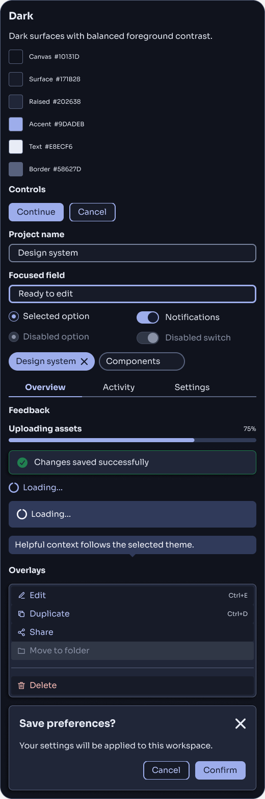
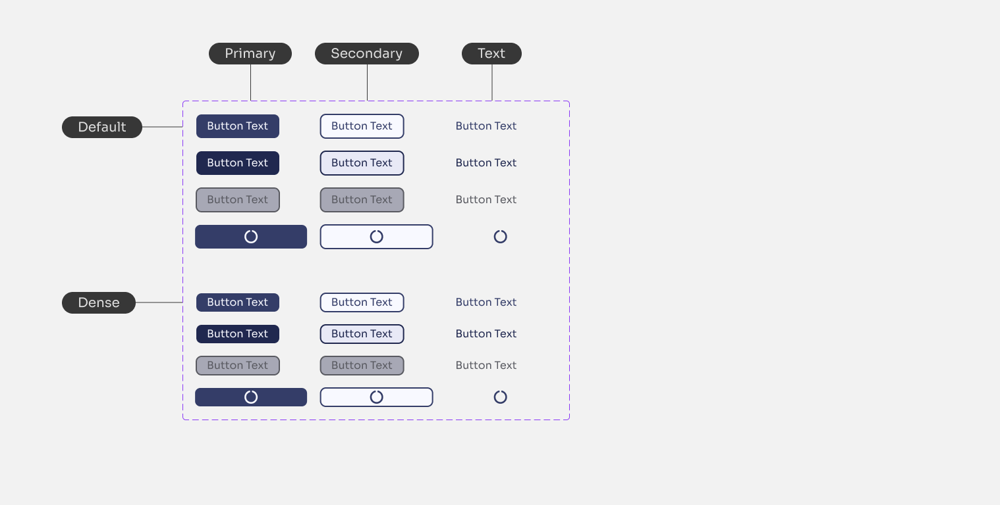
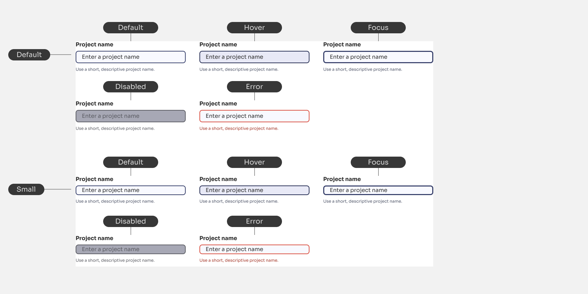

Colour roles
- Canvassurface/canvas · #F2F2F2
- Default surfacebackground/default · #F8F9FF
- Brand surfacebackground/brand · #343D68
- Default texttext/default · #2B2B2B
A practical foundation for SaaS interfaces. Shared tokens, reusable components, and thoughtful states that bring the everyday parts of a product together.

Forms, settings, navigation, and feedback make up much of a SaaS application's daily experience. This system is geared toward those practical needs rather than a highly expressive marketing aesthetic.
The design work lives in a Figma library, with a coded counterpart maintained in a separate repository. This page focuses on the design side: how the library is organised, what its components expose, and how the parts fit together.
Scope shown here: the supplied v0.6 file. These are library contents, not adoption or impact metrics. No user-testing or accessibility-certification claims are made.
The file separates Themes, an Example Page, and individual component pages. Within the Button and Textfield pages, component definitions sit alongside state annotations and usage examples.
Colour roles, spacing, type, radii, and strokes.
Named components with configurable variants and states.
A settings screen assembled from component instances.
This diagram explains the relationships; it is not a screenshot of the file's page hierarchy.
The theme examples reference roles such as surface/canvas, background/brand, and border/focus. Naming a role makes the intended use easier to follow than an isolated hex value.
background/brandPrimary action surfaceSora Regular and Bold appear in the inspected components' text styles. Shared values give those components a common vocabulary.
The inspected theme frames expose both short names, such as background/brand, and theme-prefixed bindings, such as --dv-theme-color-background-brand. The dark frame resolves that binding to a different value. The comparison below uses the resolved theme bindings rather than assuming every short-name style changes with the mode.
Values above are a selection from the inspected theme frames, not a complete token inventory. The portfolio's own typography remains separate from the system's Sora styles.
The Themes page places the same collection of controls, feedback, and overlays in Light and Dark modes. Comparing matching examples makes the colour relationships visible without changing the component's purpose.


| Role | Light | Dark |
|---|---|---|
| Canvas | #F2F2F2 | #10131D |
| Default surface | #F8F9FF | #171B28 |
| Raised surface | #F8F9FF | #202638 |
| Brand surface | #343D68 | #9DADEB |
| Default content | #2B2B2B | #E8ECF6 |
| Default border | #C2C5DF | #58627D |
There are 28 named component pages in the file. Grouped here by purpose, they cover common product building blocks. The two examples below show how variants and properties make those parts reusable.
Button, Checkbox, Radio, Switch, Dropdown, Textfield, Textarea
Bread Crumbs, Nav Bar, Side Nav, Tabs, Pagination, Menu
Alert, Toast, Loader, Progress Bar, Tooltip, Modal, Drawer
Avatar, Badge, Card, Divider, Metadata List, Settings Row, Table, Tag
Three visual variants establish action hierarchy. Two sizes and four states make the button useful beyond its resting appearance.

A field is more than a bordered box. Label, value, and helper text form its anatomy; Focus and Error states communicate what needs attention.

These are Figma state definitions. Keyboard behaviour, screen-reader support, and coded state parity need to be assessed in the implementation, not inferred from these images.
The Example Page brings the system into a familiar SaaS task: editing project settings. Navigation provides context, the main column contains editable details, and a supporting column holds summary information.
Global navigation, breadcrumbs, project identity, and tabs establish where the settings belong.
Project details, access, and notification settings are separated into readable groups. Settings Row and Metadata List provide repeatable arrangements.
A dedicated action row places Cancel and Save changes together, with guidance above the page's final edge.
This version shows a system at both component and screen level: named colour roles, two documented themes, configurable states, and a composed product example.
The next review should examine the coded library alongside Figma: component parity, actual keyboard and assistive-technology behaviour, contrast across states, and how the patterns hold up in responsive screens. Those outcomes are not established by this design showcase.
Figma access depends on the file's sharing permissions. The examples on this page can be viewed without a Figma account.